Практичні курси · журнал «ДентАрт» 2016 №4
Концепція сучасного дитячого прийому
THE CONCEPTION OF MODERN CHILD'S DENTAL APPOINTMENT
Не секрет, що багато дорослих бояться стоматологів і до останнього моменту відкладають візит до лікаря. Батьки сучасних дітей виросли в ті часи, коли від звуку бормашини здригалися дитячі серця, а пломбування зубів було болісною процедурою. На щастя, стрімкий розвиток інноваційних технологій у стоматології назавжди змінив підхід до лікування тимчасових зубів, забезпечуючи не тільки безпечне, але і безболісне вирішення всіх дитячих проблем.
Найчастіше дитячі стоматологи у своїй роботі мають справу з карієсом: раннім дитячим карієсом та ускладненим карієсом. Згідно з даними Американського центру із запобігання хронічним захворюванням і зміцнення здоров'я, карієс є найбільш поширеним хронічним захворюванням дітей у віковій групі 5-15 років. У зв'язку з тим, що ця проблема викликає у світі величезний резонанс, Всесвітня Організація Охорони Здоров'я визначила таку мету: до 2020 року 80% дітей не повинні мати карієсу і пломб у тимчасових та постійних молярах. Що ж потрібно для досягнення цієї мети? Поперше, високий рівень профілактики, освіченість батьків і, звичайно, своєчасна діагностика і правильне лікування карієсу та його ускладнень.
Для того, щоб якісно провести лікування, треба завоювати довіру дитини, постійно комунікувати з нею, використовуючи при цьому спеціальні слова: анестезія — крижинка, рабердам — повітряна кулька, кламер — кільце, лампа — сонце і т.д. Діти не можуть оцінити рівень стоматологічного лікування, сучасність матеріалів, вони довіряють інтуїції. У роботі нам допомагає спеціальний дитячий інструментарій — це кольорові маски, рукавички, смачні бальзами для губ, слиновідсмоктувачі у вигляді іграшок, дитячі кламери, дзеркала у вигляді сердечок, відеоокуляри з мультфільмами (фото 1-5).
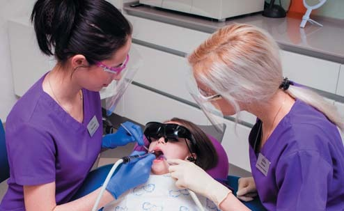
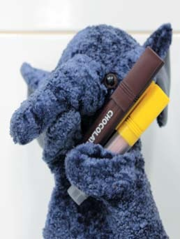
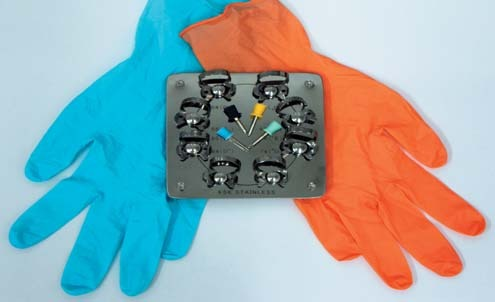
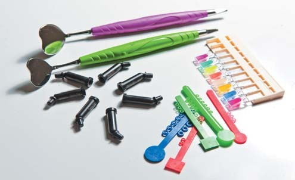
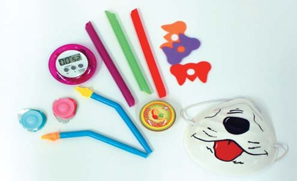
Часто ми маємо справу з дітьми, які мають негативний досвід відвідування стоматолога. Для них і для малюків, які ніколи раніше не були у лікаря, ми придумали майстер-класи, що дозволяють в ігровій формі навчити дітей чистити зуби і погратися в стоматолога. Працюємо технікою tell-show-dо, демонструючи всі етапи лікування на спеціальній іграшці, якій дитина самостійно препарує зуби, а потім ставить пломбу (фото 6).

Після знайомства та огляду порожнини рота обов'язковим етапом є фотопротокол. Для дітей використовуються спеціальні дитячі ретрактори, зменшене дзеркало і скорочений фотопротокол (виконуються 7 фотознімків, 2 позаротових і 5 внутрішньоротових) (фото 7).
Американська асоціація дитячої стоматології (AAPD) рекомендує для дітей у тимчасовому прикусі (до прорізування першого моляра) виконання серії прицільних оклюзійних рентгенівських знімків для діагностики прихованого карієсу, якщо необхідно для уточнення діагнозу — прицільних періапікальних знімків. Для дітей у ранньому змінному прикусі (після прорізування першого моляра) рекомендовано виконання панорамного рентгенівського знімка, а також прицільних оклюзійних рентгенівських знімків бічних зубів; для дітей у постійному прикусі — виконання панорамного рентгенівського знімка і прицільних оклюзійних знімків бічних зубів, і якщо необхідно для уточнення діагнозу — прицільних періапікальних знімків зубів. Виконання повного внутрішньоротового рентгенологічного дослідження (серія прицільних знімків усіх зубів) рекомендовано у разі клінічно підтвердженого генералізованого стоматологічного захворювання.
Після рентгенологічної діагностики, на повторній консультації, батьки дитини отримують на руки презентацію, яка повністю описує клінічну ситуацію в порожнині рота словами, зрозумілими для них. Вона видається у вигляді роздрукованого журналу, а у нас зберігається в електронній папці пацієнта (фото 8-11).
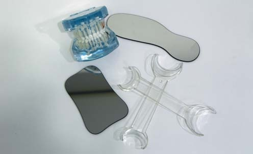
Як правило, під час першого відвідування не тільки відбувається знайомство з дитиною та батьками, виконується фото- і рентгенодіагностика, але також робиться професійне чищення з уроком гігієни. Професійна гігієна — це чудовий спосіб розблокувати стрес і завоювати довіру дитини. Для контролю гігієни в домашніх умовах існують спеціальні ополіскувачі, вони зручніші, ніж таблетки, діти із задоволенням їх використовують (фото 8).
Гарантією якісного лікування не лише в дорослій, але і в дитячій стоматології є безболісність маніпуляцій і сухість робочого поля. Як правило, багато дитячих стоматологів бояться застосування анестезії і рабердаму, мотивуючи це тим, що дитина просто не зможе витерпіти ці маніпуляції. Однак слід зауважити, що дорослим з негативним стоматологічним досвідом буває навіть важче одягнути рабердам, ніж дітям. Наш досвід підтверджує, що робота з рабердамом можлива із самого раннього віку (фото 9). Звичайну анестезію карпульним шприцом можна замінити анестезією «чарівною паличкою» апаратом комп'ютерної анестезії The Wand (Milestone Scietific, USA), який крапельно подає анестетик і робить процедуру практично невідчутною. The Wand має вбудований мікропроцесор, що дозволяє постійно контролювати тиск і швидкість подачі анестетика (фото 10).
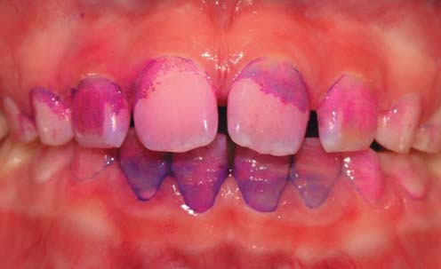
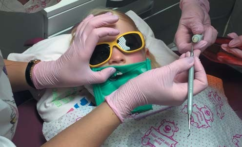
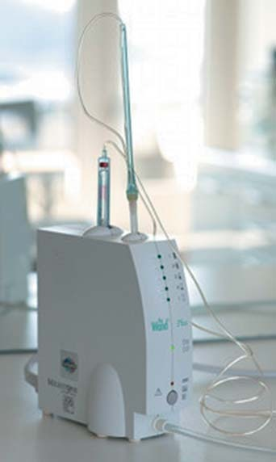
Gipson і співавтори порівнювали анестезію на верхній щелепі у дітей віком 5-15 років, виконану апаратом The Wand, і традиційну техніку з допомогою карпульного шприца. У пацієнтів першої групи (анестезія The Wand) було набагато менше неспокійних реакцій у перші 15 с ін'єкції у порівнянні з пацієнтами другої групи (зазвичай такими реакціями при традиційній техніці були плач, неспокійна поведінка, рухи руками, головою, всім тілом).
Кламери для рабердаму мають бути дитячими, атравматичними, рамка для хустки — маленького розміру; усе це зробить комфортними не лише роботу лікаря, але й стан маленького пацієнта. Саму хустку можна обробити спеціальними фломастерами, що надають їй смачного запаху, який малюк може самостійно вибрати. І, як результат, задоволена усмішка дитини та довговічні реставрації! (фото 11 а-г)
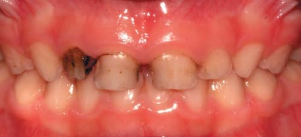
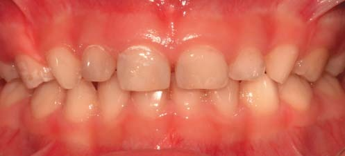
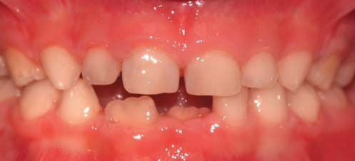
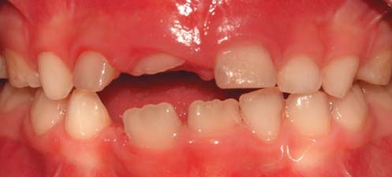
Перше відвідування лікаря-ортодонта дитині, згідно з рекомендаціями Американської асоціації ортодонтії (AAO), слід зробити не пізніше 7 років (при відсутності показань для цього у більш ранньому віці).
Клінічний випадок
Пацієнт К, 8 років, звернувся з бабусею зі скаргами на неможливість уживання їжі.
Було поставлено діагноз: відкритий прикус, двостороння латерогенія, звуження верхньої щелепи; молярно-різцева гіпоплазія тяжкого ступеня, гострий глибокий карієс зубів 31, 41, гострий середній карієс зубів 16, 26, 36, 46, гострий поверхневий карієс зубів 42, 32; хронічний періодонтит зубів 53, 54, 63, 64, 65, 73, 85 (фото 12 а, б, 13).
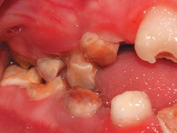
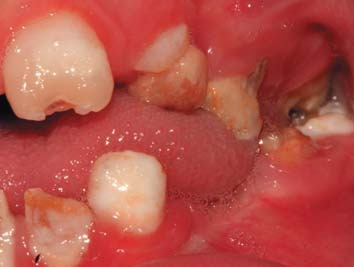
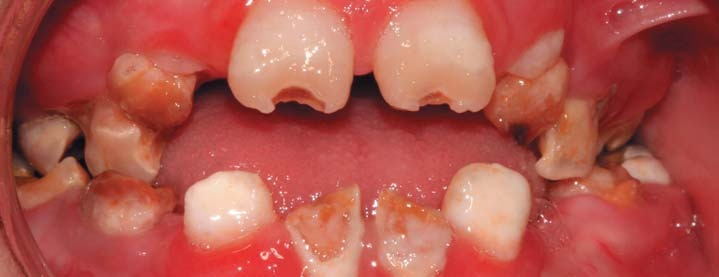
Було проведене лікування:
- полірування і навчання гігієні порожнини рота;
- лікування карієсу зубів 16, 11, 21, 26, 36, 46, 42, 32 (наногібридний композит Tetric-N-Ceram/Ivoclar Vivadent відтінків A 3,5, A 2, адгезивна система Syntac/Ivoclar Vivadent);
- лікування пульпіту в зубах 41, 31 ампутаційним методом за два відвідування із застосуванням Триоксидент (ВладМиВа);
- видалення зубів 55, 54, 53, 63, 64, 75, 84, 85;
- проведення фтористої профілактики (профілактична система Dental Resourses (США) протягом 6 міс.) (фото 15).
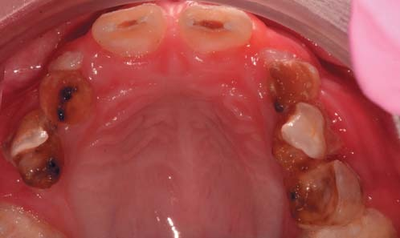
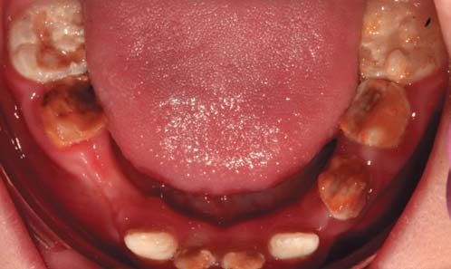
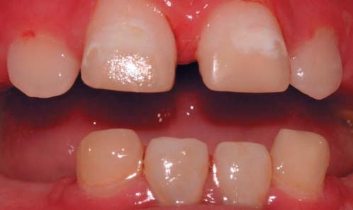
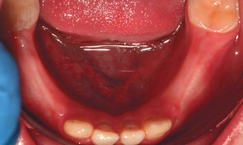
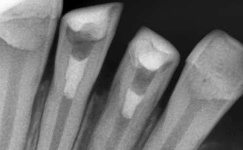
Планується виготовлення пластинок-протезів із заміщенням зубів і з заслінкою для язика на верхню щелепу.
Бувають ситуації, коли жодними способами не вдається умовити дитину лікувати зуби, або вона дуже мала, а обсяг стоматологічного втручання складний і великий, або ситуація ургентна, і часу на умовляння немає. Тоді альтернативою стандартному лікуванню є лікування під загальною анестезією (табл. 1).
Наркоз, або загальна анестезія — штучно зумовлений оборотний стан гальмування центральної нервової системи, при якому виникають сон, втрата свідомості і пам'яті (амнезія), розслаблення скелетних м'язів, зниження або відключення деяких рефлексів, а також зникає больова чутливість. Наркоз буває інгаляційний, внутрішньовенний і комбінований.
Будь-яка стоматологічна клініка, яка проводить санацію порожнини рота в умовах загальної анестезії, крім ліцензії на анестезіологію, повинна бути технічно укомплектована всім необхідним обладнанням (табл. 2). Під час лікування обов'язково проводиться анестезіологічний моніторинг, який включає оцінку:
- а) оксигенації (шляхом використання датчика кисню і пульсоксиметра);
- б) вентиляції (моніторинг вмісту CO₂ у суміші, яка видихається);
- в) кровообігу (ЕКГ, АТ, ЧСС, оцінка пульсу);
- г) температури тіла.
Севофлуран (Abbott Laboratories) — ідеальний анестетик для амбулаторної анестезіології, який може застосовуватися у дітей з перших днів життя. Він використовується як для індукційної (ввідної), так і для підтримуючої загальної анестезії, а також у комбінації з іншими препаратами для наркозу (фото 16). Основні характеристики:
- швидка індукція без ін'єкцій;
- короткий період напіввиведення;
- швидке відновлення свідомості;
- відсутність запаморочення, нудоти, блювання;
- знеболювальна дія.
Поряд з усіма перевагами, севофлуран має протипоказання — злоякісна гіпертермія (підтверджена або підозрювана генетична сприйнятливість) (фото 17).
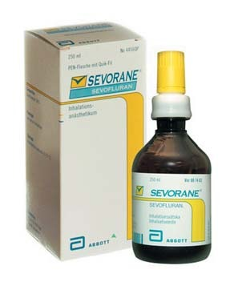
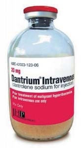
| Неконтактним |
| Тим, що мають негативний досвід місцевої анестезії |
| Некомунікабельним, боязким або перезбудженим |
| Тим, що потребують істотних хірургічних процедур |
| Для зниження ризиків при хірургічному лікуванні |
| Тим, що потребують негайного і великого обсягу втручання |
| Щоб уникнути психологічної травми |
Американська академія дитячої стоматології, 2012.
| Джерело кисню |
| Хірургічний відсмоктувач |
| Наркозо-дихальний апарат |
| Обладнання для моніторингу |
| Лікарські засоби для серцево-легеневої реанімації |
| Обладнання для проведення інтубації трахеї |
Злоякісна гіпертермія (ЗГ) — фармакокінетичне захворювання, яке виникає під час або після загальної анестезії і характеризується швидким зростанням рівня CO₂ у видихуваному повітрі, тахікардією, гіпертермією (до 42°С і вище) і м'язовою ригідністю.
Частота у дітей 1:3000 (15000), у хлопчиків у 4 рази частіше.
Галотан-кофеїновий тест — золотий стандарт діагностики ЗГ.
Дантролен — єдиний специфічний препарат, здатний зупинити криз ЗГ.
Клінічний випадок лікування під наркозом
Дитину М., 3 роки, привела мама у зв'язку зі скаргами на дискомфорт при вживанні їжі, наявність множинних каріозних порожнин у зубах верхньої і нижньої щелепи. Попередні спроби лікування були безуспішними. Після об'єктивного огляду, фотопротоколу, рентгенологічної діагностики батькам була видана презентація з планом лікування (фото 18-21).
Об'єктивно:
- Зуби 61, 62 відсутні.
- Атрофія альвеолярного відростка в ділянці видалених зубів 61, 62.
- Зуби 51, 52 зруйновано до рівня ясен.
- Норицевий хід у ділянці зуба 52.
- Зворотне перекриття в зоні зубів 63, 64, 65.
- Треми зубів 71-72, 81-82.
Аналіз рентгенограми:
- Глибокі каріозні порожнини в зубах 54, 64, 74, 75, 84, 85. Каріозні порожнини середньої глибини в зубах 55, 65.
- Зуби 61, 62 відсутні.
- Коронки зубів 51, 52 зруйновані повністю.
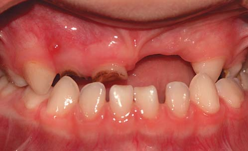
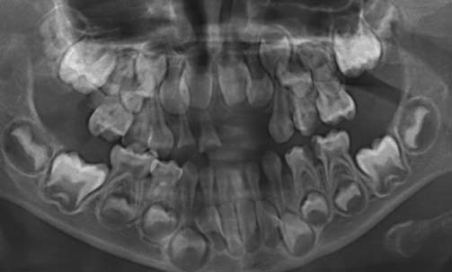
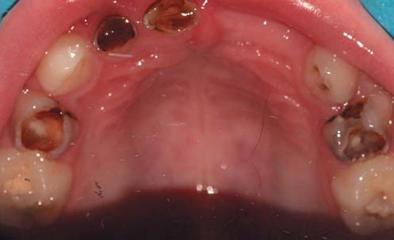
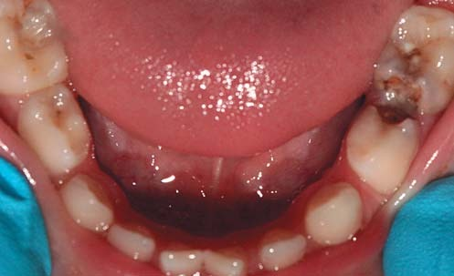
На верхній щелепі: у зубах 54, 64 глибокі каріозні порожнини, сполучені з порожниною зуба, медіально зуби зруйновані нижче рівня ясен. У зубах 63, 65 каріозні порожнини. У зубі 55 вторинний карієс.
На нижній щелепі: у зубах 74, 75 глибокі каріозні порожнини, сполучені з порожниною зуба. У зубах 84, 85 глибокі каріозні порожнини, ймовірно сполучені з пульповою камерою. Треми зубів 73-74, 72-73, 71-72, 83-84, 81-82.
Діагноз:
- Хронічний періодонтит зубів 51, 52, 54, 64.
- Вторинна адентія зубів 61, 62.
- Середній карієс зубів 55, 63, 65.
- Гострий глибокий карієс зубів 74, 75, 84, 85.
- Мезіальний прикус.
План лікування:
- Одномоментне лікування всіх зубів під наркозом:
- полірування зубів;
- лікування карієсу зубів 55, 63, 65, 84, 85;
- лікування методом вітальної ампутації зубів 74, 75, 84, 85;
- видалення зубів 51, 52, 54, 64 (у зв'язку з великим руйнуванням і неможливістю відновлення).
- Урок гігієни, рекомендації щодо харчування.
- Консультація ортодонта і ортодонтичне лікування.
- Контроль гігієни та профілактика карієсу 1 раз на 3 місяці.
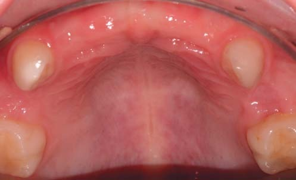
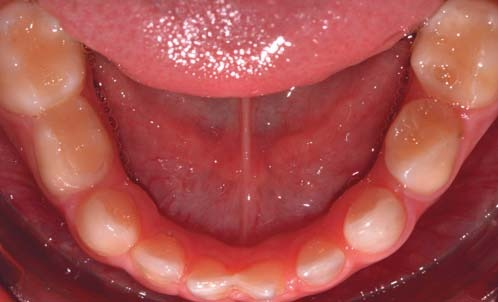
В умовах загальної анестезії севофлураном було виконано:
- видалення зубів 51, 52, 54, 64 через неможливість їх відновлення;
- лікування карієсу зубів 53, 55, 63, 65 (наногібридний композит Tetric N-Ceram A2, адгезивна система Single Bond/Ivoclar Vivadent);
- лікування пульпіту зубів 74, 75, 84, 85 ампутаційним методом з використанням окису цинку (склоіономерний фотополімер Riva LC/SDI Limited, наногібридний композит Tetric N-Ceram/Ivoclar Vivadent A2).
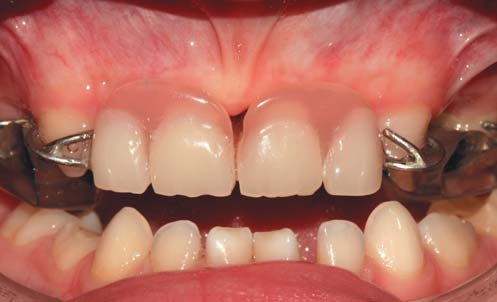
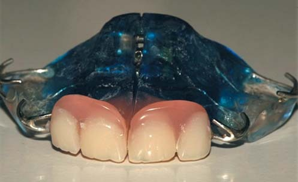
Через 4 тижні після санації дитині було виготовлено знімний пластинковий апарат на верхню щелепу зі штучними зубами і накусочним майданчиком у бічних ділянках.
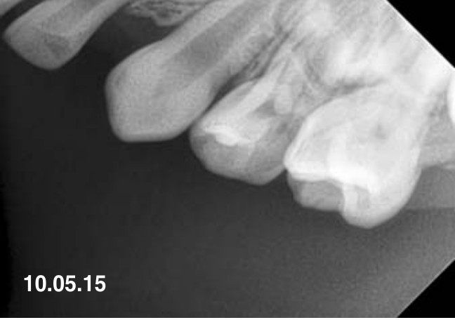
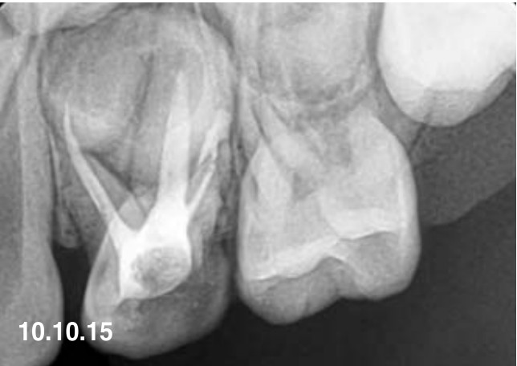
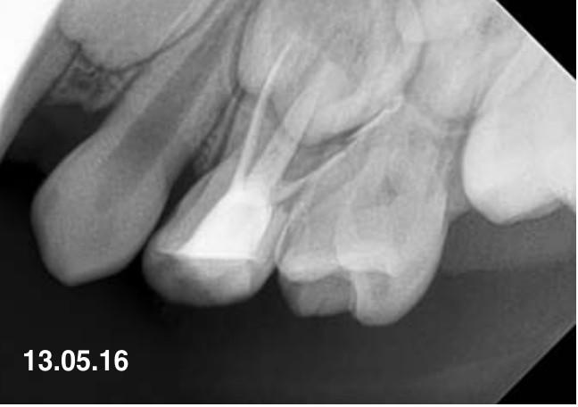
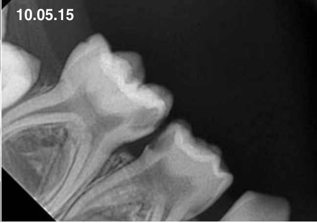
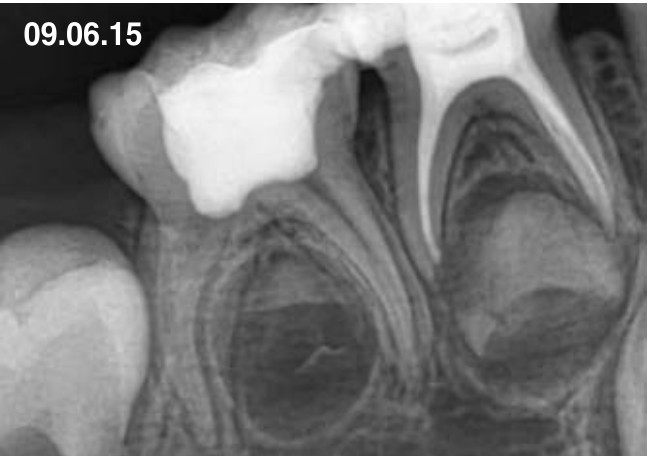
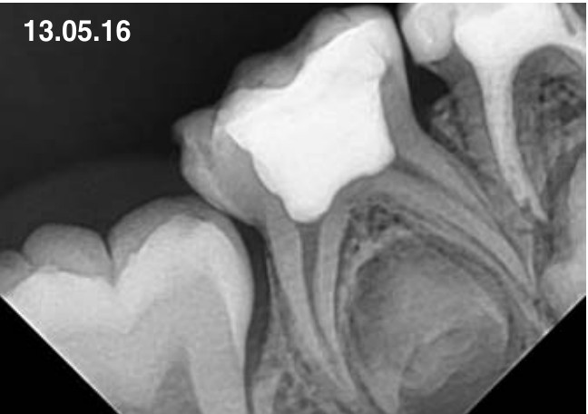
Контрольні рентгенознімки ендодонтично лікованих зубів у динаміці спостереження (10.05.15 — 13.05.16).
Після закінчення лікування кожна дитина обов'язково проходить диспансерне спостереження у лікаря-ортодонта та дитячого стоматолога. Під час кожного візиту виконуються фотопротокол, контроль і корекція гігієни порожнини рота, профілактика карієсу, а також раз на 6 місяців — контрольні знімки ендодонтично лікованих зубів.
Висновки
- Для успішної роботи з дитиною — техніка «tell-show-do», прийом завжди повинен закінчуватися на позитивній ноті.
- Протокол обстеження дитини практично нічим не відрізняється від протоколу обстеження дорослого.
- Кожна дитина повинна спостерігатися у ортодонта.
- Не треба боятися «дорослих» матеріалів для дитячої стоматології.
Література
- American Dental Association Council on Scientific Affairs. The use of dental radiographs: Update and Recommendations. 2006; 137(9): 1304-12.
- American Academy of Pediatric Dentistry. Guideline on prescribing dental radiographs for infants, children, adolescents and persons with special health care needs. Available at: "http://www.aapd.org/media/policies_guidlines/e_radiographs.pdf" Reaffirmed 2012.
- Martin Hobdell, Poul Erik Petersen, John Clarkson et al. International Dental Journal. Global goals for oral health 2020 – 2003; 53: 285-288.
- American Society Anesthesiologists. Standards for basic anesthetic monitoring. Available at: "http://www.asahq.org/~/media/sites/asahq/files/public/resources/standardsguidelines/standardsforbasicanestheticmonitoring.pdf". Affirmed 2015.
- T. Digger, FRCA, and D.J. Viira. The pharmaceautical journal. Anaesthesia and surgical pain relief — the ideal general anaesthetic agent – 2008. Available at: http://www.pharmaceuticaljournal.com/learning/learningarticle/anaesthesiaandsurgicalpainrelieftheidealgeneralanaestheticagent/10030510.article